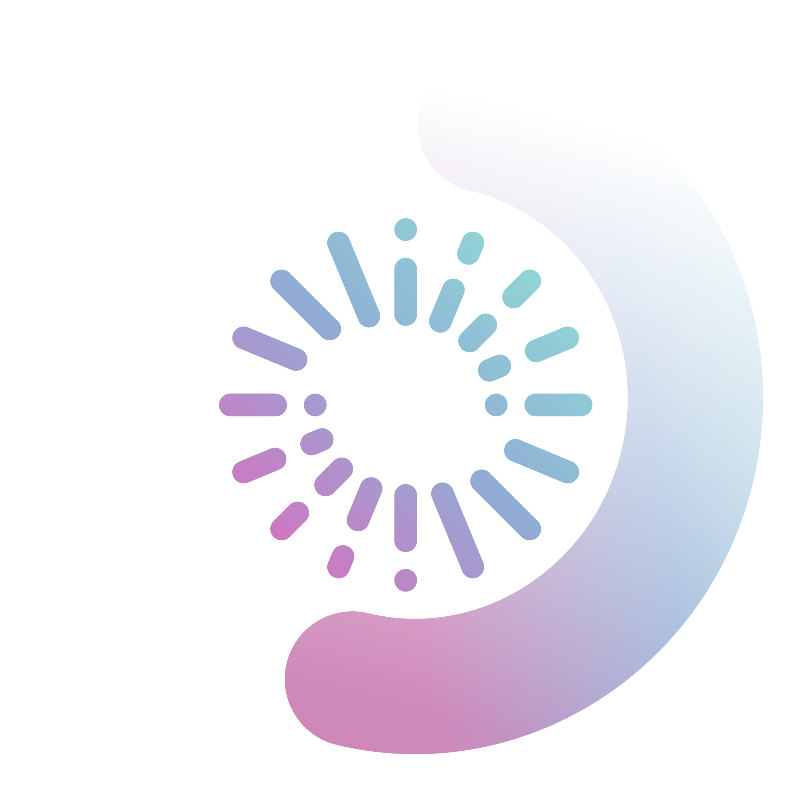

RxSight LAL Light Adjustable LensPatient Brochure
빛으로 맞추는
정밀 시력
수술 후에도 조정 가능한
세계 유일의 인공수정체
RxSight LAL의 모든 것
FDA Approved
CE Marked
Provided by ARACARE
CONTENTS
목차
03
LAL 기술 원리
04
FDA 임상 데이터
05
기존 IOL과 비교
06
수술 과정 & 적응증
07
환자 후기 & FAQ
ABOUT ARACARE
아라케어는 RxSight 공식 파트너로서, 국내 LAL 시술 도입 및 교육을 전담합니다. 환자 맞춤형 정밀 시력 솔루션을 제공합니다.